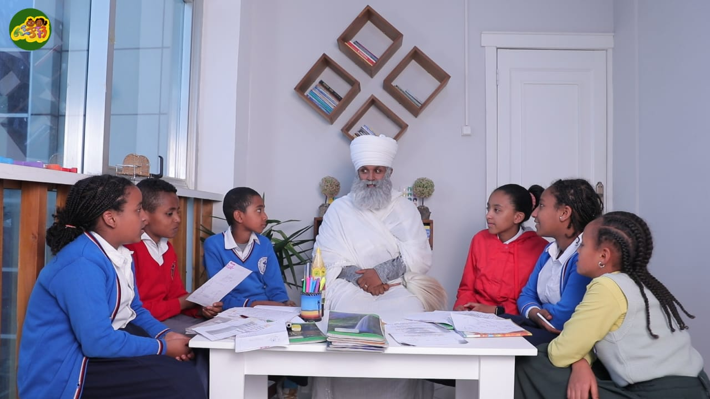

Lejochachen began with two volunteers who wanted to serve children and families through spiritual and psychological education. Today, that vision has grown into a legal professional association supported by experts across multiple fields.ልጆቻችን ለልጆችና ለቤተሰቦች መንፈሳዊና ሥነ-ልቦናዊ ትምህርት ለማቅረብ በፈለጉ ሁለት በጎ ፈቃደኞች ተጀመረ። ዛሬ ይህ ራዕይ የተለያዩ ባለሙያዎችን ያቀፈ ሕጋዊ የሙያ ማኅበር ሆኗል።
Read our storyታሪካችንን ያንብቡChildren at the centerልጆች በመሃል
A living ministry of worship, learning, friendship, and care.የአምልኮ፣ የትምህርት፣ የጓደኝነትና የእንክብካቤ ሕያው አገልግሎት።
Lejochachen brings Orthodox teaching into spaces where children can ask, sing, serve, create, and grow with mentors who know their faith and their world.ልጆቻችን ልጆች እንዲጠይቁ፣ እንዲዘምሩ፣ እንዲያገለግሉ፣ እንዲፈጥሩ እና ከእምነታቸውና ከዘመናቸው ጋር በሚገናኙ መሪዎች እንዲያድጉ የኦርቶዶክስ ትምህርትን ያቀርባል።


About Usስለ እኛ
From a heartfelt vision to a recognized professional association.ከልባዊ ርዕይ ወደ ዕውቅና ያገኘ የሙያ ማኅበር።
“Train up a child in the way he should go, and when he is old he will not depart from it.”“ልጅን በሚሔድበት መንገድ ምራው በሸመገለም ጊዜ ከእርሱ ፈቀቅ አይልም፡፡”Proverbs 22:6መጽሐፈ ምሳሌ 22፡6
Our Solutionመፍትሔያችን
This is the way.ይኸው መንገዱ!
Explore expert-led manuals, training sessions, media, and tools designed to anchor your family.ቤተሰብዎን ለማጽናት የተዘጋጁ በባለሙያ የሚመሩ መመሪያዎችን፣ ሥልጠናዎችን፣ ሚዲያዎችን እና መሳሪያዎችን ያስሱ።
01
Resource Hubየእውቀት ማዕከል
Parenting, faith, child psychology, and YouTube lessons.ወላጅነት፣ እምነት፣ የልጆች ሥነ-ልቦናና የዩቱብ ትምህርቶች።
02Baptism Calculatorየጥምቀት ማስያ
Calculate baptism dates in Gregorian and Ethiopian calendars.የጥምቀት ቀንን በጎርጎርዮሳዊና በኢትዮጵያ ቀን ያስሉ።
03Support & Serveይደግፉና ያገልግሉ
Give financially, volunteer professionally, or partner with us.በገንዘብ ይደግፉ፣ በሙያ ያገልግሉ፣ ወይም አጋር ይሁኑ።
Our children, our responsibilityልጆቻችን የጋራ ኃላፊነታችን
Faith formation that children can see, hear, and remember.ልጆች ሊያዩት፣ ሊሰሙት እና ሊያስታውሱት የሚችሉት የእምነት ምስረታ።

